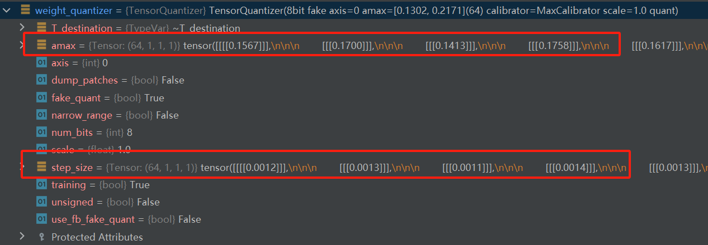
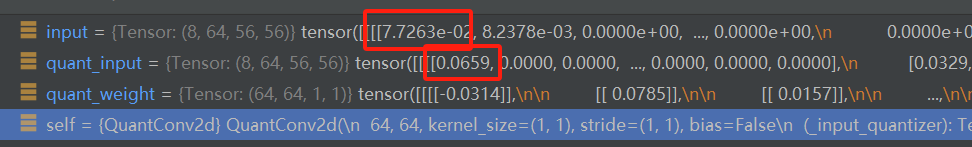
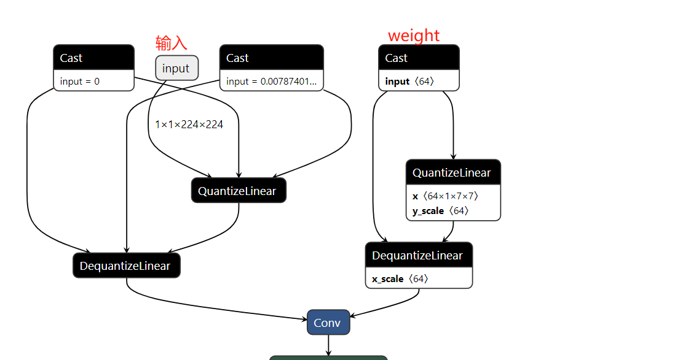
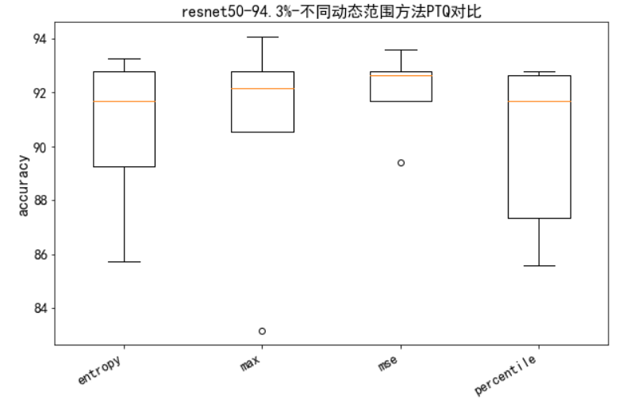

12.7 PTQ 量化实践
前言
上一节介绍了模型量化的概念，本节开始进行PTQ的实践，并对比不同动态范围计算方法的差别（max, entropy, mse, pertentile）。
由于量化是对已经训练好的模型进行量化并评估在测试集上的精度，因此量化（PTQ和QAT）需要依托一个完成的模型训练项目开展，这里采用第八章第一节的分类任务。
PTQ代码实践将从以下几个部分进行：pytorch-quantization库介绍、推理统计、校准、量化、评估模型准确率和TensorRT推理效率。
pytorch_quantization 工具库
安装：
pip install pytorch-quantization --extra-index-url https://pypi.ngc.nvidia.com
或者（pytorch 1.12版本时推荐用 pytorch-quantization==2.1.2 ）
pip install pytorch-quantization==2.1.2
pytorch_quantization是由NVIDIA官方提供的PyTorch量化库，用于将PyTorch模型量化为低比特形式（如Int8）。
pytorch_quantization 库使用非常方便，其PTQ步骤分四步:
第一步：构建具备量化模块的nn.Module，在模型定义之前替换pytorch官方nn.Module的网络层。如nn.conv2替换为quant_nn.QuantConv2d。
Quantxxx这样的网络层中会在原功能基础上，添加一些组件，这些组件将在校准时记录数据、并存储scale和Z值。
第二步：正常构建模型，并执行前向推理。
第三步：执行动态范围计算，并计算scale和Z值。
第四步：导出ONNX模型
通过以上流程可知道，仅第一步中pytorch_quantization 库中自定义的量化功能模块需要深入了解，其余都是常规流程。
因此，下面简单介绍pytorch_quantization中的核心组件。
量化函数——Quantization function
提供两个量化功能函数 tensor_quant 和 fake_tensor_quant。
tensor_quant(inputs, amax, num_bits=8, output_dtype=torch.float, unsigned=False)
- 功能：对输入张量进行量化，输出量化后的张量
fake_tensor_quant(inputs, amax, num_bits=8, output_dtype=torch.float, unsigned=False)
- 输入张量进行伪量化，先量化，后反量化，伪量化输出的张量与原张量存在量化误差，可用于理解量化误差的产生。
from pytorch_quantization import tensor_quant
# Generate random input. With fixed seed 12345, x should be
# tensor([0.9817, 0.8796, 0.9921, 0.4611, 0.0832, 0.1784, 0.3674, 0.5676, 0.3376, 0.2119])
torch.manual_seed(12345)
x = torch.rand(10)
# fake quantize tensor x. fake_quant_x will be
# tensor([0.9843, 0.8828, 0.9921, 0.4609, 0.0859, 0.1797, 0.3672, 0.5703, 0.3359, 0.2109])
fake_quant_x = tensor_quant.fake_tensor_quant(x, x.abs().max())
# quantize tensor x. quant_x will be
# tensor([126., 113., 127., 59., 11., 23., 47., 73., 43., 27.])
# with scale=128.0057
quant_x, scale = tensor_quant.tensor_quant(x, x.abs().max())
量化描述符和量化器——Descriptor and quantizer
QuantDescriptor 用于描述该采用何种量化方式，例如 QUANT_DESC_8BIT_PER_TENSOR、 QUANT_DESC_8BIT_CONV2D_WEIGHT_PER_CHANNEL。
这里的pre tensor ， per channel是一个新知识点，对于activation通常用per tensor， 对于卷积核通常用per channel。细节不展开，感兴趣可以阅读《A White Paper on Neural Network Quantization》的2.4.2 Per-tensor and per-channel quantization
描述符是用于初始化量化器quantizer的，量化器可接收张量，输出量化后的张量。完成量化后，在量化器内部会记录相应的scale和Z值。
from pytorch_quantization.tensor_quant import QuantDescriptor
from pytorch_quantization.nn.modules.tensor_quantizer import TensorQuantizer
quant_desc = QuantDescriptor(num_bits=4, fake_quant=False, axis=(0), unsigned=True)
quantizer = TensorQuantizer(quant_desc)
torch.manual_seed(12345)
x = torch.rand(3, 4, 2)
quant_x = quantizer(x)
print(x)
print(quant_x)
print(quantizer.scale) # 可以得到3个scale，可知道是按照第一个维度切分张量。因为描述符设置了 axis=(0)
量化模块——Quantized module
前面提到PTQ量化第一步是将pq库的Quantxxx模块替换掉pytorch的nn.Module，例如nn.conv2d变为quant_nn.Conv2d。
在实际量化中主要有Linear和Conv两大类（nn.Module可以回顾chapter-4），下面对比pytorch和pq库的网络层创建区别。
from torch import nn
from pytorch_quantization import tensor_quant
import pytorch_quantization.nn as quant_nn
# pytorch's module
fc1 = nn.Linear(in_features, out_features, bias=True)
conv1 = nn.Conv2d(in_channels, out_channels, kernel_size)
# quantized version
quant_fc1 = quant_nn.Linear(
in_features, out_features, bias=True,
quant_desc_input=tensor_quant.QUANT_DESC_8BIT_PER_TENSOR,
quant_desc_weight=tensor_quant.QUANT_DESC_8BIT_LINEAR_WEIGHT_PER_ROW)
quant_conv1 = quant_nn.Conv2d(
in_channels, out_channels, kernel_size,
quant_desc_input=tensor_quant.QUANT_DESC_8BIT_PER_TENSOR,
quant_desc_weight=tensor_quant.QUANT_DESC_8BIT_CONV2D_WEIGHT_PER_CHANNEL)
可以发现，只是多了量化描述符的配置，根据量化对象（上一节提到，主要是weight， bias， activation），通常需要设定不同的量化方式。
例如，对于activation用per tensor， 对于linear的权重用per row，对于conv的权重用pre channel。
ResNet50 PTQ
模型权重传入百度云盘，供下载
下面基于chapter-8/01_classification中的项目进行量化，首先训练一个resnet50，得到的accuracy是94.39。模型权重下载-提取码：jhkm
# 也可以重新训练 resnet50
nohup python train_main.py --data-path ../data/chest_xray --batch-size 64 --workers 8 --lr 0.01 --lr-step-size 20 --epochs 50 --model resnet50 > ./log.log 2>&1 &
接下来对它进行量化，并对比accuracy掉点情况以及推理加速情况。
配套代码位于这里
流程分析
PTQ整体流程在前言以及介绍，这里从代码角度介绍核心流程
# 第一步，初始化pq，将pytorch的模块替换掉
quant_modules.initialize() # 替换torch.nn的常用层，变为可量化的层
# 第二步，创建模型、加载训练权重
model = get_model(args, logger, device)
# 第三步，前向推理，统计activation激活值分布
collect_stats(model, train_loader, num_batches=args.num_data) # 设置量化模块开关，并推理，同时统计激活值
# 第四步，根据动态范围方法计算scale、Z值，获得量化后的模型
compute_amax(model, method=args.ptq_method) # 计算上限、下限，并计算scale 、Z值
# 第五步，采用量化后的模型进行accuracy评估
loss_m_valid, acc_m_valid, mat_valid = \
utils.ModelTrainer.evaluate(valid_loader, model, criterion, device, classes)
# 第六步，保存成ONNX模型和pth模型
第一步中，可以进入pytorch_quantization\quant_modules.py查看当前支持的量化层，量化层中会插入量化器，量化器中存储量化用的数据——scale和Z
# Global member of the file that contains the mapping of quantized modules
_DEFAULT_QUANT_MAP = [_quant_entry(torch.nn, "Conv1d", quant_nn.QuantConv1d),
_quant_entry(torch.nn, "Conv2d", quant_nn.QuantConv2d),
_quant_entry(torch.nn, "Conv3d", quant_nn.QuantConv3d),
_quant_entry(torch.nn, "ConvTranspose1d", quant_nn.QuantConvTranspose1d),
_quant_entry(torch.nn, "ConvTranspose2d", quant_nn.QuantConvTranspose2d),
_quant_entry(torch.nn, "ConvTranspose3d", quant_nn.QuantConvTranspose3d),
_quant_entry(torch.nn, "Linear", quant_nn.QuantLinear),
_quant_entry(torch.nn, "LSTM", quant_nn.QuantLSTM),
_quant_entry(torch.nn, "LSTMCell", quant_nn.QuantLSTMCell),
_quant_entry(torch.nn, "AvgPool1d", quant_nn.QuantAvgPool1d),
_quant_entry(torch.nn, "AvgPool2d", quant_nn.QuantAvgPool2d),
_quant_entry(torch.nn, "AvgPool3d", quant_nn.QuantAvgPool3d),
_quant_entry(torch.nn, "AdaptiveAvgPool1d", quant_nn.QuantAdaptiveAvgPool1d),
_quant_entry(torch.nn, "AdaptiveAvgPool2d", quant_nn.QuantAdaptiveAvgPool2d),
_quant_entry(torch.nn, "AdaptiveAvgPool3d", quant_nn.QuantAdaptiveAvgPool3d),]
第二步，加载模型。
第三步，进行前向推理，但在实际推理时需要对两个开关分别进行控制。
- 量化开关：若打开，会进行量化，这个在校准的时候是不需要的。
- 校准开关：若打开，会在模型前向传播时，统计数据，这个在校准时是需要的。
因此在推理前有这样的代码段（同理，推理后需要把两个开关反过来）：
# Enable calibrators
for name, module in model.named_modules():
if isinstance(module, quant_nn.TensorQuantizer):
if module._calibrator is not None:
module.disable_quant()
module.enable_calib()
else:
module.disable()
第四步中，调用module.load_calib_amax(**kwargs)，实现scale和Z值的计算。scale和Z值会存在量化器中。
例如resnet50中的conv1层是一个QuantConv2d，其中包含了input_quantizer和weight_quantizer两个量化器，量化器中存储了amax和step_size(scale值)

第五步中，量化后resnet50模型推理时，量化层会对输入数据、权重进行量化，然后再进行运算。
这里debug进入到layer1的第一个卷积层，观察Quantconv2d的forward（pytorch_quantization\nn\modules\quant_conv.py）
可以看到，进行运算前，对输入数据和权重进行量化，量化用到的就是上述提到的量化器，量化器中有scale和Z值。
def forward(self, input):
quant_input, quant_weight = self._quant(input)
output = F.conv2d(quant_input, quant_weight, self.bias, self.stride, self.padding, self.dilation, self.groups)
return output
def _quant(self, input):
quant_input = self._input_quantizer(input)
quant_weight = self._weight_quantizer(self.weight)
return (quant_input, quant_weight)

具体量化过程，可debug追溯得到如下过程：
quant_weight = self._weight_quantizer(self.weight)
1 ---> 进入量化器中的forward。pytorch_quantization\nn\modules\tensor_quantizer.py
1 ---> 量化器中可实现校准功能、截断功能、量化功能，是根据3个属性开关来判断，这里也发现了校准数据收集的代码。
def forward(self, inputs):
if self._disabled:
return inputs
outputs = inputs
if self._if_calib:
if self._calibrator is None:
raise RuntimeError("Calibrator was not created.")
# Shape is only know when it sees the first tensor
self._calibrator.collect(inputs)
if self._if_clip:
if not self._learn_amax:
raise RuntimeError("Clip without learning amax is not implemented.")
outputs = self.clip(inputs)
if self._if_quant:
outputs = self._quant_forward(inputs)
return outputs
2 ---> 进入量化器中的_quant_forward(),
2 ---> _quant_forward中可以实现伪量化、量化两种操作，这里是需要进行量化的，因此会执行
2 ---> outputs, self._scale = tensor_quant(inputs, amax, self._num_bits, self._unsigned)
2 ---> tensor_quant就是开篇介绍pytorch_quantization库的第一个功能，对张量进行量化的函数。
def _quant_forward(self, inputs):
"""Quantized forward pass."""
if self._learn_amax:
inputs = self.clip(inputs)
amax = torch.max(-self.clip.clip_value_min, self.clip.clip_value_max).detach()
else:
amax = self._get_amax(inputs)
if self._fake_quant:
if not TensorQuantizer.use_fb_fake_quant:
outputs = fake_tensor_quant(inputs, amax, self._num_bits, self._unsigned, self._narrow_range)
else:
if inputs.dtype == torch.half or amax.dtype == torch.half:
raise Exception("Exporting to ONNX in fp16 is not supported. Please export in fp32, i.e. disable AMP.")
outputs = self._fb_fake_quant(inputs, amax)
else:
outputs, self._scale = tensor_quant(inputs, amax, self._num_bits, self._unsigned)
return outputs
完成量化模型评估后，可进行模型保存为ONNX格式，再用netron查看。
可以看到量化的层会插入QDQ节点，这些节点在TensorRT中将会被使用

PTQ 量化实现
执行命令后，可在chapter-8\01_classification\Result\2023-09-26_01-47-40 文件夹下获得对应的onnx输出，并可观察不同方法得到的模型精度
python resnet_ptq.py --mode quantize --num-data 512
动态范围计算方法对比
对于resnet_ptq.py，这里简单介绍使用方法
- 根据args.ptq_method的有无决定单个动态范围方法量化， 还是四种量化方法均量化。
- 根据args.mode == 'quantize' 还是 evaluate，决定代码进行量化，还是进行单纯的预训练模型accuracy评估。（用于对比）
- 其他参数参考get_args_parser()
# 进行四种方法对比。跑512个batch
python resnet_ptq.py --mode quantize --num-data 512
# 单个方法量化
python resnet_ptq.py --mode quantize --ptq-method max --num-data 512
python resnet_ptq.py --mode quantize --ptq-method entropy --num-data 512
python resnet_ptq.py --mode quantize --ptq-method mse --num-data 512
python resnet_ptq.py --mode quantize --ptq-method percentile --num-data 512
通过五次实验，发现PTQ后的Acc存在较大方差，具体数据分布如下箱线图所示：
{'entropy': [85.74, 89.26, 91.67, 92.79, 93.27],
'max': [83.17, 90.54, 92.15, 92.79, 94.07],
'mse': [89.42, 91.67, 92.63, 92.79, 93.59],
'percentile': [85.58, 87.34, 91.67, 92.63, 92.79]}
效果最好的是max，除了一次83%的acc之外，其余效果比较好，并且最高达到94.07%。
建议：方法都试试，实在不稳定，考虑QAT。

PTQ 效率对比
为了观察PTQ带来的效率提升，下面进行未量化、int8量化，分别在bs=1，bs=32时的对比。
首先获得fp32的onnx：
python resnet_ptq.py --mode onnxexport
此时在Result\2023-09-26_01-47-40下应当拥有所有onnx模型，可以采用trtexec进行效率测试
trtexec --onnx=resnet_50_fp32_bs1.onnx
trtexec --onnx=resnet_50_fp32_bs32.onnx
trtexec --onnx=resnet_50_ptq_bs1_data-num512_percentile_91.03%.onnx --int8
trtexec --onnx=resnet_50_ptq_bs32_data-num512_percentile_91.03%.onnx --int8 --saveEngine=resnet_ptq_int8.engine
| 时延(中位数) ms | fp32 | int8 | 吞吐量 fps | fp32 | int8 | |
|---|---|---|---|---|---|---|
| bs=1 | 1.84 | 1.01（↓46%） | 524 | 860（↑64%） | ||
| bs=32 | 26.79 | 15.4（↓43%） | 37.1*32=1187 | 64.5*32=2064（↑73.9%） |
通过实验，可知道，时延可下降40%， 吞吐量提高70%左右。
小结
本节首先介绍pytorch-quantization库中三个核心概念，然后梳理PTQ量化步骤，接着实现了resnet50的PTQ量化实验，最后对量化后的模型在trtexec上进行效率对比。
通过本节实践可知：
- int8 可有效提高推理速度和吞吐量，具体提高比例需结合具体模型、GPU型号而定。本案例时延降低40%左右，吞吐量提高70%左右
- PTQ量化掉点不稳定，需多次试验，或进行逐层分析，或逐层设定动态范围方法
- 采用pytorch-quantization量化，大体分6步：初始化quanti_modules，加载模型，推理统计，量化获得s和z，精度评估，模型导出
下一小节，介绍QAT的实现。